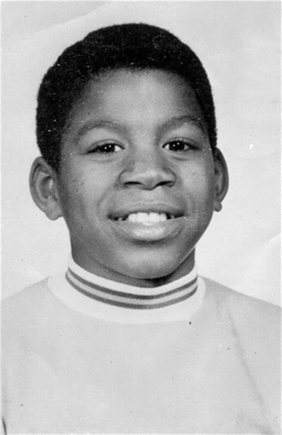
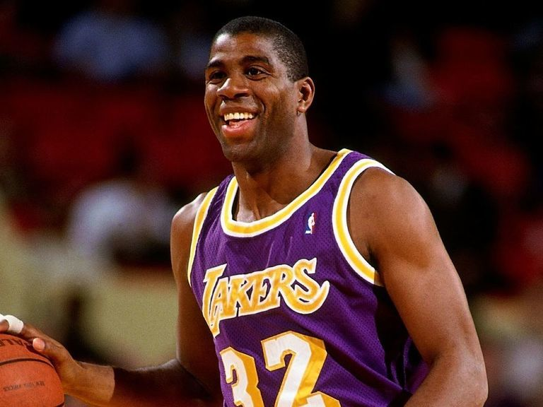

Infancia:
Johnson creció en Míchigan, y desde pequeño le gustó jugar al baloncesto. Se levantaba temprano para ir a jugar antes del colegio, y frecuentemente iba a los sitios botando un balón. Según su madre, mostraba mucho entusiasmo en todo lo que hacía. Cuando por fin se unió al equipo de baloncesto de su instituto, logró con 15 años un triple-doble con 36 puntos, 16 rebotes y 16 asistencias. Después de esto, un periodista deportivo le denominó "Magic" por primera vez.

Familia:
Nació como Earvin Johnson Jr. en Lansing, Michigan, el 14 de agosto de 1959. Su padre, Earvin Sr., era un trabajador de la asamblea de General Motors, y su madre Christine, custodio de la escuela. Él tiene 6 hermanos. Sus padres estaban interesados en el baloncesto y su padre había jugado baloncesto en la escuela secundaria en su estado natal de Mississippi. El joven Earvin también desarrolló un temprano interés en el deporte.
Después de la escuela secundaria, se unió a la Universidad Estatal de Michigan, donde continuó jugando baloncesto.

Su carrera:
Fue reclutado por primera vez por Los Angeles Lakers en 1979. Después de un buen espectáculo en las temporadas iniciales, firmó un contrato de 25 años y $ 25 millones con los Lakers. Se desempeñó extremadamente bien en la temporada 1981-82 y promedió 18.6 puntos, 9.6 rebotes, 9.5 asistencias y 2.7 robos por partido, y fue votado como miembro del Segundo Equipo de la NBA. Johnson promedió 18.3 puntos, 12.6 asistencias y 6.2 rebotes por juego en la temporada regular 1984-85 y llevó a los Lakers a las Finales de la NBA de 1985. Los Lakers se enfrentaron a los Boston Celtics en la final y Johnson, junto con Abdul-Jabbar, llevaron al equipo a la victoria.
Registró un récord personal de 23.9 puntos, así como 12.2 asistencias y 6.3 rebotes por juego en la temporada 1986-87. Los Lakers se enfrentaron a los Celtics una vez más en las Finales de la NBA de 1987, y Johnson realizo el tiro ganador del juego y recibió el título de MVP de las Finales.
Su gran forma continuó durante los próximos años y anotó 22.5 puntos, 12.8 asistencias y 7.9 rebotes por partido en la temporada 1988-89 de la NBA. Una vez más, los Lakers llegaron a las Finales de la NBA en 1989, pero una lesión mantuvo a Johnson alejado de la acción, y su equipo perdió ante los Pistons.
Un incidente en 1991 cambió su vida para siempre: le diagnosticaron una infección por VIH. Anunció públicamente su diagnóstico y decidió retirarse. A pesar de su retiro, fue elegido para competir en los Juegos Olímpicos de Verano de 1992 para el equipo de baloncesto de los Estados Unidos. El equipo dominó la competencia y ganó la medalla de oro con un récord de 8-0.